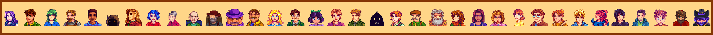

yythlss
鹈鹕镇 · 开发者农场
搜索或跳转到…
/
春
星期五 12日
上午
7:10
G
0
9

yythlss
公开
关注
3
★ 星标
42
⎇ 复刻
6
代码
议题
2
拉取请求
1
Actions
Wiki
⎇ main
▰ 提交
128
分支
2
MIT 许可证
README.md
预览
项目文档
Wiki
这个仓库的文档还在孵化中，农场主正在补充更多条目。
快速上手指南
硬件连接与引脚说明
常见问题（浇水篇）
版本路线图